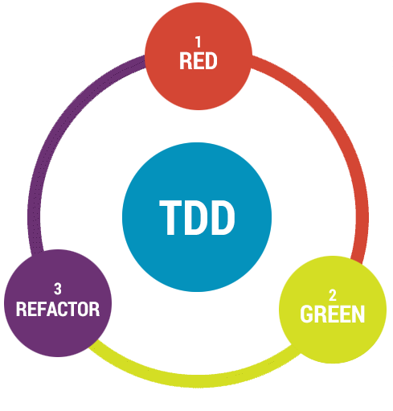

Criado por Icaro Roberto.
Simplificar o entendimento do desenvolvimento orientado a testes (TDD) e demonstrar vantagens em relação ao desenvolvimento tradicional.
Por que desenvolver orientado a testes?
“Vou ter que codar o dobro para ter o mesmo resultado!”
“Errar é inerente a natureza humana.
Precaver-se contra os erros é uma atitude inteligente.”
